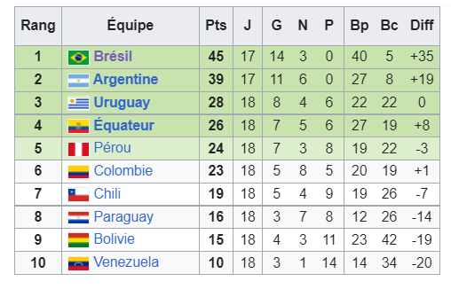

Selección de fútbol de Uruguay

Description
L'équipe d'Uruguay de football (Selección de fútbol de Uruguay) est la sélection de joueurs uruguayens représentant le pays lors des compétitions internationales de football masculin, sous l'égide de l'Association uruguayenne de football. La sélection uruguayenne est surnommée la Celeste en français : « la céleste ».
Elle est, avec 19 trophées internationaux, l'équipe nationale la plus titrée au monde devant l'Argentine et le Brésil (chacune avec 18).
Créée en 1902, la sélection uruguayenne est durant la première moitié du xxe siècle une des meilleures équipes de la planète, alors que le pays ne compte pas plus de deux millions d'habitantsn 1. Elle remporte notamment deux titres olympiques (en 1924 et en 1928) et la première Coupe du monde en 1930, ainsi que de nombreux championnats d'Amérique du Sud. La Celeste s'adjuge une deuxième Coupe du monde en 1950
Le parcours de la selection uruguayenne lors des eliminatoires de la coupe du monde
Deux fois vainqueur de la Coupe du monde (1930 et 1950) et avec quatorze participations à son actif, l'Uruguay reste un habitué des qualifications à l'événement. Seulement, cette nation qui arrive en fin de cycle et tente de se réinventer, a eu beaucoup plus de mal que les autres années. Si le Brésil (1er) et l'Argentine (2e) ont roulé sur les qualifications sud-américaines, la Celeste ne peut pas en dire autant avec un total de six défaites et huit matches nuls en 18 rencontres. Elle s'est d'ailleurs lourdement inclinée lors des deux rencontres face à l'Albiceleste (0-1, 0-3) et la Seleção (0-2, 1-4). L'Uruguay a également concédé des défaites plus inquiétantes en Bolivie (3-0), en Équateur (4-2), ainsi qu'un nul concédé face au denier du classement : le Venezuela (0-0). Proches d'une élimination, les Uruguayens se sont réveillés en début d'année et ont enchainé quatre victoires consécutives pour assurer une troisième place et un billet vers le Qatar.

Les matches disputés en phase de groupe des qualifications
La liste convoquée d'Uruguay